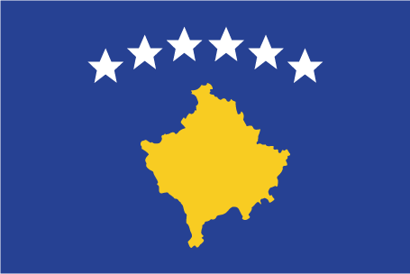

Europe :: KOSOVO
Introduction :: KOSOVO
-
The central Balkans were part of the Roman and Byzantine Empires before ethnic Serbs migrated to the territories of modern Kosovo in the 7th century. During the medieval period, Kosovo became the center of a Serbian Empire and saw the construction of many important Serb religious sites, including many architecturally significant Serbian Orthodox monasteries. The defeat of Serbian forces at the Battle of Kosovo in 1389 led to five centuries of Ottoman rule during which large numbers of Turks and Albanians moved to Kosovo. By the end of the 19th century, Albanians replaced Serbs as the dominant ethnic group in Kosovo. Serbia reacquired control over the region from the Ottoman Empire during the First Balkan War of 1912. After World War II, Kosovo's present-day boundaries were established when Kosovo became an autonomous province of Serbia in the Socialist Federal Republic of Yugoslavia (S.F.R.Y.). Despite legislative concessions, Albanian nationalism increased in the 1980s, which led to riots and calls for Kosovo's independence. The Serbs - many of whom viewed Kosovo as their cultural heartland - instituted a new constitution in 1989 revoking Kosovo's autonomous status. Kosovo's Albanian leaders responded in 1991 by organizing a referendum declaring Kosovo independent. Serbia undertook repressive measures against the Kosovar Albanians in the 1990s, provoking a Kosovar Albanian insurgency.Beginning in 1998, Serbia conducted a brutal counterinsurgency campaign that resulted in massacres and massive expulsions of ethnic Albanians (some 800,000 ethnic Albanians were forced from their homes in Kosovo). After international attempts to mediate the conflict failed, a three-month NATO military operation against Serbia beginning in March 1999 forced the Serbs to agree to withdraw their military and police forces from Kosovo. UN Security Council Resolution 1244 (1999) placed Kosovo under a transitional administration, the UN Interim Administration Mission in Kosovo (UNMIK), pending a determination of Kosovo's future status. A UN-led process began in late 2005 to determine Kosovo's final status. The 2006-07 negotiations ended without agreement between Belgrade and Pristina, though the UN issued a comprehensive report on Kosovo's final status that endorsed independence. On 17 February 2008, the Kosovo Assembly declared Kosovo independent. Since then, over 110 countries have recognized Kosovo, and it has joined numerous international organizations. In October 2008, Serbia sought an advisory opinion from the International Court of Justice (ICJ) on the legality under international law of Kosovo's declaration of independence. The ICJ released the advisory opinion in July 2010 affirming that Kosovo's declaration of independence did not violate general principles of international law, UN Security Council Resolution 1244, or the Constitutive Framework. The opinion was closely tailored to Kosovo's unique history and circumstances.Demonstrating Kosovo’s development into a sovereign, multi-ethnic, democratic country the international community ended the period of Supervised Independence in 2012. Elections were held throughout Kosovo in 2013 and 2014, at the municipal and national level respectively. Serbia continues to reject Kosovo's independence, but the two countries reached an agreement to normalize their relations in April 2013 through EU-facilitated talks and are currently engaged in the implementation process. Kosovo seeks full integration into the international community, and has pursued bilateral recognitions and eventual membership in international organizations, such as the UN, EU, and NATO.
Geography :: KOSOVO
-
Southeast Europe, between Serbia and Macedonia42 35 N, 21 00 EEuropetotal: 10,887 sq kmland: 10,887 sq kmwater: 0 sq kmcountry comparison to the world: 168slightly larger than Delawaretotal: 714 kmborder countries (4): Albania 112 km, Macedonia 160 km, Montenegro 76 km, Serbia 366 km0 km (landlocked)none (landlocked)influenced by continental air masses resulting in relatively cold winters with heavy snowfall and hot, dry summers and autumns; Mediterranean and alpine influences create regional variation; maximum rainfall between October and Decemberflat fluvial basin at an elevation of 400-700 m above sea level surrounded by several high mountain ranges with elevations of 2,000 to 2,500 mmean elevation: 450 melevation extremes: lowest point: Drini i Bardhe/Beli Drim 297 m (located on the border with Albania)highest point: Gjeravica/Deravica 2,656 mnickel, lead, zinc, magnesium, lignite, kaolin, chrome, bauxiteagricultural land: 52.8%arable land 27.4%; permanent crops 1.9%; permanent pasture 23.5%forest: 41.7%other: 5.5% (2001 est.)NApopulation clusters exist throughout the country, the largest being in the east in and around the capital of Pristinathe 41-km long Nerodimka River divides into two branches each of which flows into a different sea: the northern branch flows into the Sitnica River, which via the Ibar, Morava, and Danube Rivers ultimately flows into the Black Sea; the southern branch flows via the Lepenac and Vardar Rivers into the Aegean Sea
People and Society :: KOSOVO
-
1,895,250 (July 2017 est.)country comparison to the world: 150noun: Kosovar (Albanian), Kosovac (Serbian)adjective: Kosovar (Albanian), Kosovski (Serbian)note: Kosovan, a neutral term, is sometimes also used as a noun or adjectiveAlbanians 92.9%, Bosniaks 1.6%, Serbs 1.5%, Turk 1.1%, Ashkali 0.9%, Egyptian 0.7%, Gorani 0.6%, Romani 0.5%, other/unspecified 0.2%note: these estimates may under-represent Serb, Romani, and some other ethnic minorities because they are based on the 2011 Kosovo national census, which excluded northern Kosovo (a largely Serb-inhabited region) and was partially boycotted by Serb and Romani communities in southern Kosovo (2011 est.)Albanian (official) 94.5%, Bosnian 1.7%, Serbian (official) 1.6%, Turkish 1.1%, other 0.9% (includes Romani), unspecified 0.1%note: in municipalities where a community's mother tongue is not one of Kosovo's official languages, the language of that community may be given official status according to the 2006 Law on the Use of Languages (2011 est.)Muslim 95.6%, Roman Catholic 2.2%, Orthodox 1.5%, other 0.07%, none 0.07%, unspecified 0.6% (2011 est.)0-14 years: 25.01% (male 246,281/female 227,718)15-24 years: 17.22% (male 170,515/female 155,840)25-54 years: 42.57% (male 425,815/female 381,037)55-64 years: 7.92% (male 75,964/female 74,170)65 years and over: 7.28% (male 57,965/female 79,945) (2017 est.)total: 29.1 yearsmale: 28.8 yearsfemale: 29.5 years (2017 est.)country comparison to the world: 126population clusters exist throughout the country, the largest being in the east in and around the capital of PristinaPRISTINA (capital) 207,062 (2014)at birth: 1.08 male(s)/female0-14 years: 1.08 male(s)/female15-24 years: 1.1 male(s)/female25-54 years: 1.12 male(s)/female55-64 years: 1.01 male(s)/female65 years and over: 0.72 male(s)/femaletotal population: 1.06 male(s)/female (2016 est.)total: 57.7%male: 54.2%female: 67.2% (2015 est.)country comparison to the world: 2
Government :: KOSOVO
-
conventional long form: Republic of Kosovoconventional short form: Kosovolocal long form: Republika e Kosoves (Republika Kosovo)local short form: Kosova (Kosovo)etymology: name derives from the Serbian "kos" meaning "blackbird," an ellipsis (linguistic omission) for "kosove polje" or "field of the blackbirds"parliamentary republicname: Pristina (Prishtine, Prishtina)geographic coordinates: 42 40 N, 21 10 Etime difference: UTC+1 (6 hours ahead of Washington, DC, during Standard Time)daylight saving time: +1hr, begins last Sunday in March; ends last Sunday in October38 municipalities (komunat, singular - komuna (Albanian); opstine, singular - opstina (Serbian)); Decan (Decani), Dragash (Dragas), Ferizaj (Urosevac), Fushe Kosove (Kosovo Polje), Gjakove (Dakovica), Gjilan (Gnjilane), Gllogovc (Glogovac), Gracanice (Gracanica), Hani i Elezit (Deneral Jankovic), Istog (Istok), Junik, Kacanik, Kamenice (Kamenica), Kline (Klina), Kllokot (Klokot), Leposaviq (Leposavic), Lipjan (Lipljan), Malisheve (Malisevo), Mamushe (Mamusa), Mitrovice e Jug (Juzna Mitrovica) [South Mitrovica], Mitrovice e Veriut (Severna Mitrovica) [North Mitrovica], Novoberde (Novo Brdo), Obiliq (Obilic), Partesh (Partes), Peje (Pec), Podujeve (Podujevo), Prishtine (Pristina), Prizren, Rahovec (Orahovac), Ranillug (Ranilug), Shterpce (Strpce), Shtime (Stimlje), Skenderaj (Srbica), Suhareke (Suva Reka), Viti (Vitina), Vushtrri (Vucitrn), Zubin Potok, Zvecan17 February 2008 (from Serbia)Independence Day, 17 February (2008)history: previous 1974, 1990; latest (postindependence) draft finalized 2 April 2008, signed 7 April 2008, ratified 9 April 2008, entered into force 15 June 2008; note - amendment 24, passed by the Assembly in August 2015, established the Kosovo Relocated Specialist Institution, a court established to try war crimes allegedly committed by the Kosovo Liberation Army in the late 1990samendments: proposed by the government, by the president of the republic, or by one-fourth of Assembly deputies; passage requires two-thirds majority vote of the Assembly, including two-thirds majority vote of deputies representing non-majority communities, followed by a favorable Constitutional Court assessment; amended several times, last in 2016 (2016)civil law system; note - the European Union Rule of Law Mission (EULEX) retains limited executive powers related to the investigation of such issues as war crimeshas not submitted an ICJ jurisdiction declaration; non-party state to the ICCtcitizenship by birth: nocitizenship by descent only: at least one parent must be a citizen of Kosovodual citizenship recognized: yesresidency requirement for naturalization: 5 years18 years of age; universalchief of state: President Hashim THACI (since 7 April 2016)head of government: Prime Minister Ramush HARADINAJ (since 9 September 2017); note - Prime Minister Isa MUSTAFA lost no-confidence vote on 10 May 2017cabinet: Cabinet elected by the Assemblyelections/appointments: president indirectly elected by at least two-thirds majority vote of the Assembly for a 5-year term; if a candidate does not attain a two-thirds threshold in the first two ballots, the candidate winning a simple majority vote in the third ballot is elected (eligible for a second term); election last held on 26 February 2016 (next to be held in 2021); prime minister indirectly elected by the Assemblyelection results: Hashim THACI elected president in the third ballot; Assembly vote - Hashim THACI (PDK) 71, Rafet RAMA (PDK) 0, invalid 10; Isa MUSTAFA (LDK) selected prime minister by the president in consultation with the LDK/PDK/PD/LB/PSHDK/PK coalitiondescription: unicameral Assembly or Kuvendi i Kosoves/Skupstina Kosova (120 seats; 100 members directly elected by proportional representation vote with 20 seats reserved for ethnic minorities - 10 for Serbs and 10 for other ethnic minorities; members serve 4-year terms)elections: last held on 11 June 2017 (next to be held in 2021); note - early elections were held after a no-confidence vote on 10 May 2017 led to the dismissal of Prime Minister Isa MUSTAFAelection results: percent of vote by party/coalition - PAN Coalition 43.2%, LDK 24.7%, Self-Determination 12.7%, New Kosovo Coalition 7.3%, Independent Liberal Party 2.1%, other 11.9%; seats by party/coalition - PAN Coalition 46, LDK 27, Self-Determination 14, New Kosovo Coalition 8, Independent Liberal Party 8, other 17highest court(s): Supreme Court (consists of the court president and NA judges); Constitutional Court (consists of the court president, vice president, and 7 judges)judge selection and term of office: Supreme Court judges nominated by the Kosovo Judicial Council, a 13-member independent body staffed by judges and lay members, and also responsible for overall administration of Kosovo's judicial system; judges appointed by the president of the Republic of Kosovo; judges appointed until mandatory retirement age; Constitutional Court judges nominated by the Kosovo Assembly and appointed by the president of the republic to serve single, 9-year termssubordinate courts: subordinate courts: Court of Appeals (organized into 4 departments: General, Serious Crime, Commercial Matters, and Administrative Matters; Basic Court (located in 7 municipalities, each with several branches)note: in August 2015, the Kosovo Assembly approved a constitutional amendment that establishes the Kosovo Relocated Specialist Judicial Institution; the court, located at the Hague in the Netherlands, began operating in late 2016 and tries crimes by members of the Kosovo Liberation Army during the late 1990sAlbanian Christian Democratic Party of Kosovo or PSHDK [Uke BERISHA]Alliance for the Future of Kosovo or AAK [Ramush HARADINAJ]Conservative Party of Kosovo or PK [Munir BASHA]Democratic League of Kosovo or LDK [Isa MUSTAFA]Democratic Party of Kosovo or PDK [Kadri VESELI]Independent Liberal Party or SLS [Siobodan PETROVIC]Initiative for Kosovo or NISMA [Fatmir LIMAJ]Justice Party of Kosovo or PD [Ferid AGANI]LAA Coalition [Isa MUSTAFA] (includes LDK, AKR, The Alternative)Movement for Self-Determination (Vetevendosje) or VV [Visar YMERI]Movement for Unification or LB [Valon MURATI]New Kosovo Alliance or AKR [Behgjet PACOLLI]New Kosovo CoalitionPAN Coalition [Kadri VESELI] (includes PDK, AAK, NISMA)Self-Determination (Vetevendosje) (Visar YMERI)Serb List [Slavko SIMIC]The Alternative [Mimoza KUSATI-LILA]Turkish Democratic Party of Kosovo or KDTP [Mahir YAGCILAR]Vakat Coalition or VAKAT [Rasim DEMIRI]CiviKos Platform [Valdete IDRIZI]Council for the Defense of Human Rights and Freedom or CDHRF [Behxhet SHALA]Group for Political and Legal Studies or GLPS [Fisnik KORENICA]KLA War Veterans Organization [Muharrem XHEMAJLI]Kosova Women's Network or KWN [Igballe ROGOVA]Kosovar Civil Society Foundation or KCFS [Venera HAJRULLAHU]Kosovo Democratic Institute or KDI [Ismet KRYEZIU]Organization for Democracy, Anti-Corruption and Dignity Rise! or COHU [Arton DEMHASAJ]Serb National Council (SNV)Speak Up or FOL [Petrit ZOGAJ] (think tank)IBRD, IDA, IFC, IMF, ITUC (NGOs), MIGA, OIF (observer)chief of mission: Ambassador Vlora CITAKU (since 17 September 2015)chancery: 2175 K Street, NW, Suite 300, Washington, DC 20037telephone: 202-450-2130FAX: 202-735-0609consulate(s) general: New Yorkconsulate(s): Des Moines (IA)chief of mission: Ambassador Gregory T. DELAWIE (since 21 August 2015)embassy: Arberia/Dragodan, Nazim Hikmet 30, Pristina, Kosovomailing address: use embassy street addresstelephone: [381] 38 59 59 3000FAX: [381] 38 549 890centered on a dark blue field is a gold-colored silhouette of Kosovo surmounted by six white, five-pointed stars arrayed in a slight arc; each star represents one of the major ethnic groups of Kosovo: Albanians, Serbs, Turks, Gorani, Roma, and Bosniaksnote: one of only two national flags that uses a map as a design element; the flag of Cyprus is the othersix, five-pointed, white stars; national colors: blue, gold, whitename: "Europe"lyrics/music: no lyrics/Mendi MENGJIQInote: adopted 2008; Kosovo chose to exclude lyrics in its anthem so as not to offend the country's minority ethnic groups
Economy :: KOSOVO
-
Kosovo's economy has shown progress in transitioning to a market-based system and maintaining macroeconomic stability, but it is still highly dependent on the international community and the diaspora for financial and technical assistance. Remittances from the diaspora - located mainly in Germany, Switzerland, and the Nordic countries - are estimated to account for about 17% of GDP and international donor assistance accounts for approximately 10% of GDP. With international assistance, Kosovo has been able to privatize a majority of its state-owned enterprises.Kosovo's citizens are the second poorest in Europe, after Moldova, with a per capita GDP (PPP) of $9,600 in 2016. An unemployment rate of 33%, and a youth unemployment rate near 60%, in a country where the average age is 26, encourages emigration and fuels a significant informal, unreported economy. Emigration remains challenging, however, because Kosovo lacks visa-free travel to the EU. Most of Kosovo's population lives in rural towns outside of the capital, Pristina. Inefficient, near-subsistence farming is common - the result of small plots, limited mechanization, and a lack of technical expertise. Kosovo enjoys lower labor costs than the rest of the region. However, high levels of corruption, little contract enforcement, and unreliable electricity supply have discouraged potential investors. The official currency of Kosovo is the euro, but the Serbian dinar is also used illegally in Serb majority communities. Kosovo's tie to the euro has helped keep core inflation low.Minerals and metals production - including lignite, lead, zinc, nickel, chrome, aluminum, magnesium, and a wide variety of construction materials - once the backbone of industry, has declined because of aging equipment and insufficient investment, problems exacerbated by competing and unresolved ownership claims of Kosovo’s largest mines. A limited and unreliable electricity supply is a major impediment to economic development, but Kosovo has received technical assistance to help improve the sector’s performance. In 2012, Kosovo privatized its electricity supply and distribution network. The US Government is cooperating with the Ministry of Economic Development (MED) and the World Bank to conclude a commercial tender for the construction of Kosovo C, a new lignite-fired power plant that would leverage Kosovo’s large lignite reserves. MED also has plans for the rehabilitation of an older coal power plant, Kosovo B, and the development of a coal mine that could supply both plants.In June 2009, Kosovo joined the World Bank and International Monetary Fund, and began servicing its share of the former Yugoslavia's debt. In order to help integrate Kosovo into regional economic structures, UNMIK signed (on behalf of Kosovo) its accession to the Central Europe Free Trade Area (CEFTA) in 2006. Kosovo joined the European Bank for Reconstruction and Development in 2012 and the Council of Europe Development Bank in 2013. In 2016, Kosovo implemented the Stabilization and Association Agreement (SAA) negotiations with the EU, focused on trade liberalization. Under the SAA, Kosovo — which gets approximately 58% of government revenue from tariffs on imports — is required to phase out tariffs on EU goods over the next seven years. In 2014, nearly 60% of customs duty-eligible imports into Kosovo were EU goods. In 2015, Kosovo negotiated a $185 million Stand-by Arrangement (SBA) with the IMF following the conclusion of its previous SBA in 2014. The IMF requested an extension of the current SBA to August 2017 to facilitate policy continuity and allow sufficient time for ongoing structural reforms to progress. In August 2015, as part of its EU-facilitated normalization process with Serbia, Kosovo signed agreements on telecommunications and energy distribution, but disagreements over who owns economic assets, such as the Trepca mining conglomerate, within Kosovo continue.Kosovo experienced its first federal budget deficit in 2012, when government expenditures climbed sharply. In May 2014, the government introduced a 25% salary increase for public sector employees and an equal increase in certain social benefits. Central revenues could not sustain these increases, and the government was forced to reduce its planned capital investments. The government, led by Prime Minister MUSTAFA - a trained economist - recently made several changes to its fiscal policy, expanding the list of duty-free imports, decreasing the Value Added Tax (VAT) for basic food items and public utilities, and increasing the VAT for all other goods.While Kosovo’s economy continued to make progress, it needs further reform and investment to enable the level of growth required to reduce unemployment and raise living standards in a meaningful way.$18.41 billion (2016 est.)$17.57 billion (2015 est.)$16.7 billion (2014 est.)note: data are in 2016 dollarscountry comparison to the world: 149$6.624 billion (2016 est.)3.4% (2016 est.)4.1% (2015 est.)1.2% (2014 est.)country comparison to the world: 79$10,000 (2016 est.)$9,700 (2015 est.)$9,300 (2014 est.)note: data are in 2016 US dollarscountry comparison to the world: 13912.5% of GDP (2016 est.)12.7% of GDP (2015 est.)12.5% of GDP (2014 est.)country comparison to the world: 144household consumption: 90.5%government consumption: 16%investment in fixed capital: 28.2%investment in inventories: 3%exports of goods and services: 5.8%imports of goods and services: -43.5% (2014 est.)agriculture: 12.9%industry: 22.6%services: 64.5% (2009 est.)wheat, corn, berries, potatoes, peppers, fruit; dairy, livestock; fishmineral mining, construction materials, base metals, leather, machinery, appliances, foodstuffs and beverages, textiles483,200note: includes those estimated to be employed in the grey economy (2013 est.)country comparison to the world: 157agriculture: 5.9%industry: 16.8%services: 77.3% (2013)34.8% (2016 est.)34.6% (2015 est.)note: Kosovo has a large informal sector that may not be reflected in these datacountry comparison to the world: 20630% (2013 est.)30 (FY05/06)country comparison to the world: 127revenues: $1.396 billionexpenditures: $1.61 billion (2014 est.)20.8% of GDP (2014 est.)country comparison to the world: 144-3.2% of GDP (2014 est.)country comparison to the world: 12420.6% of GDP (2016 est.)18.9% of GDP (2015 est.)country comparison to the world: 1830.3% (2016 est.)-0.5% (2015 est.)country comparison to the world: 5912.8% (30 June 2013 est.)13.7% (31 December 2012 est.)country comparison to the world: 61$2.511 billion (2014 est.)$2.773 billion (2012 est.)country comparison to the world: 145$2.02 billion (2014 est.)$2.505 billion (2013 est.)country comparison to the world: 145$-651 million (2016 est.)$-548 million (2015 est.)country comparison to the world: 107$349 million (2014 est.)$408 million (2013 est.)country comparison to the world: 180mining and processed metal products, scrap metals, leather products, machinery, appliances, prepared foodstuffs, beverages and tobacco, vegetable products, textiles and apparelAlbania 24.2%, Macedonia, The Former Yugo Rep of 17.3%, Germany 8.8%, Switzerland 7.7%, Bulgaria 7.5%, Netherlands 6.9%, Turkey 4.6%, Austria 4.4% (2016)$2.687 billion (2014 est.)$3.398 billion (2013 est.)country comparison to the world: 148foodstuffs, livestock, wood, petroleum, chemicals, machinery, minerals, textiles, stone, ceramic and glass products, electrical equipmentMacedonia, The Former Yugo Rep of 34.1%, Turkey 12%, Germany 9.4%, Albania 7.4%, Slovenia 6.9%, Italy 4.6% (2016)$NA$1.4 billion (2016 est.)$1.3 billion (2015 est.)country comparison to the world: 160$21.2 billion (31 December 2016 est.)$36.67 billion (31 December 2015 est.)country comparison to the world: 77euros (EUR) per US dollar -0.9214 (2016 est.)0.885 (2015 est.)0.885 (2014 est.)0.7634 (2013 est.)0.7752 (2012 est.)
Energy :: KOSOVO
-
electrification - total population: 100% (2016)5.759 billion kWh (2015 est.)country comparison to the world: 1164.89 billion kWh (2015 est.)country comparison to the world: 122553 million kWh (2015 est.)country comparison to the world: 65684 million kWh (2015 est.)country comparison to the world: 751.565 million kW (2015 est.)country comparison to the world: 12097.1% of total installed capacity (2015 est.)country comparison to the world: 430% of total installed capacity (2015 est.)country comparison to the world: 1232.9% of total installed capacity (2015 est.)country comparison to the world: 1340% of total installed capacity (2015 est.)country comparison to the world: 1920 bbl/day (2016 est.)country comparison to the world: 1560 bbl/day (2014 est.)country comparison to the world: 1490 bbl/day (2014 est.)country comparison to the world: 146NA bbl (1 January 2017 es)0 bbl/day (2014 est.)country comparison to the world: 16012,000 bbl/day (2015 est.)country comparison to the world: 15838.36 bbl/day (2014 est.)country comparison to the world: 12611,430 bbl/day (2014 est.)country comparison to the world: 1390 cu m (2016)country comparison to the world: 1550 cu m (2016)country comparison to the world: 199NA cu m7.576 million Mt (2012 est.)country comparison to the world: 114
Communications :: KOSOVO
-
total: 831,470subscriptions per 100 inhabitants: 45 (July 2016 est.)country comparison to the world: 143total: 562,000subscriptions per 100 inhabitants: 31 (July 2016 est.)country comparison to the world: 168
Transportation :: KOSOVO
-
Z6 (2016)6 (2013)country comparison to the world: 172total: 32,438 to 3,047 m: 11,524 to 2,437 m: 1under 914 m: 1 (2017)total: 3under 914 m: 3 (2013)2 (2013)total: 333 kmstandard gauge: 333 km 1.435-m gauge (2014)country comparison to the world: 121total: 2,003 kmpaved: 1,883 km (includes 38 km of expressways)unpaved: 120 km (2014)country comparison to the world: 176
Military and Security :: KOSOVO
-
0.78% of GDP (2015)0.73% of GDP (2014)0.69% of GDP (2013)0.67% of GDP (2012)0.76% of GDP (2011)Kosovo does not have a military force; the Kosovo Security Force was established in 2009 and maintains a non-military mandate in four core competencies: search-and-rescue, firefighting, demining, and hazardous material response (2015)
Transnational Issues :: KOSOVO
-
Serbia with several other states protest the US and other states' recognition of Kosovo's declaration of its status as a sovereign and independent state in February 2008; ethnic Serbian municipalities along Kosovo's northern border challenge final status of Kosovo-Serbia boundary; several thousand NATO-led Kosovo Force peacekeepers under UN Interim Administration Mission in Kosovo authority continue to keep the peace within Kosovo between the ethnic Albanian majority and the Serb minority in Kosovo; Kosovo and Macedonia completed demarcation of their boundary in September 2008IDPs: 17,000 (primarily ethnic Serbs displaced during the 1998-1999 war fearing reprisals from the majority ethnic-Albanian population; a smaller number of ethnic Serbs, Roma, Ashkali, and Egyptians fled their homes in 2004 as a result of violence) (2015)